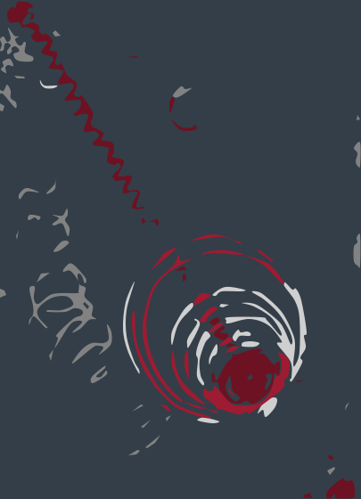
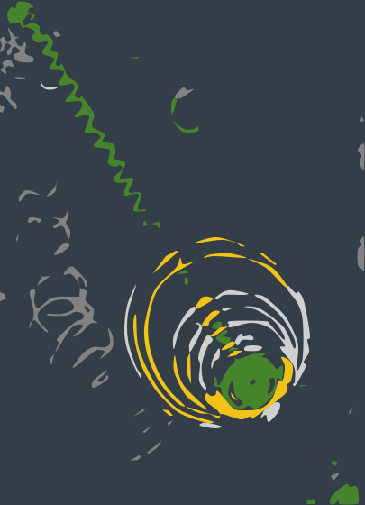
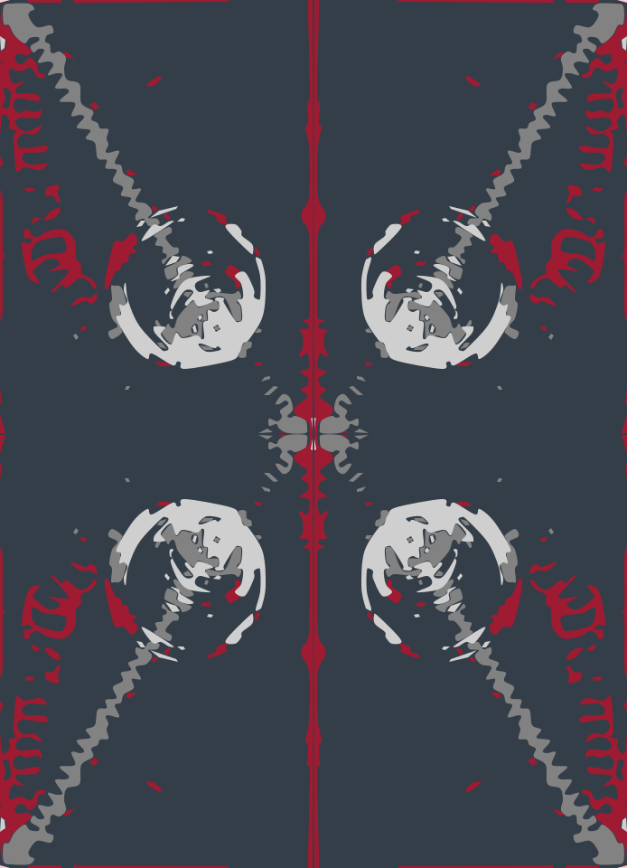
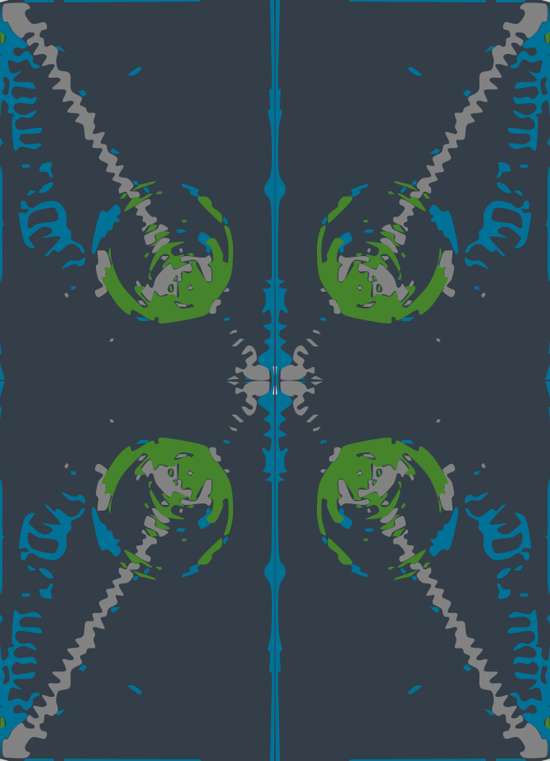
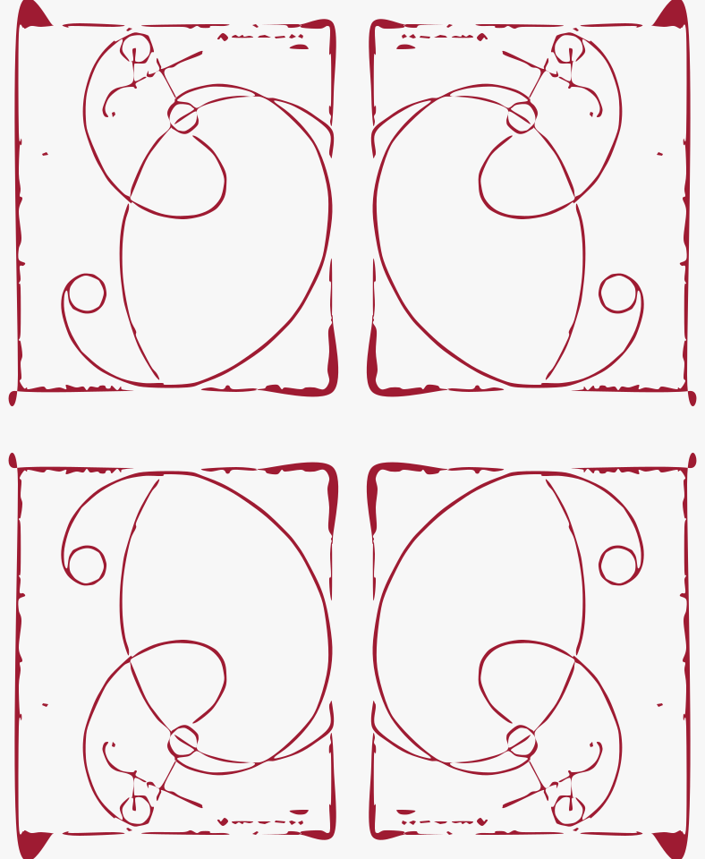
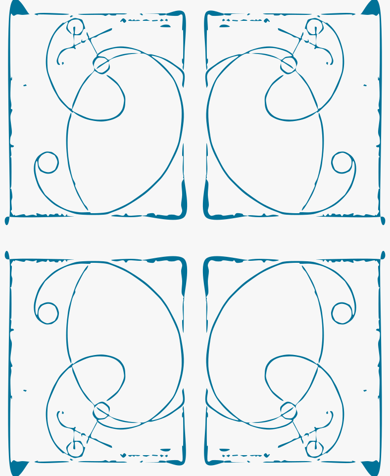
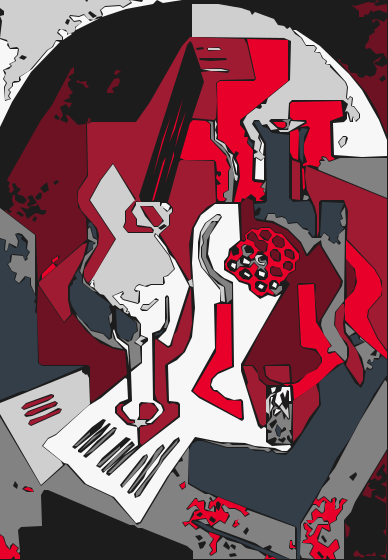
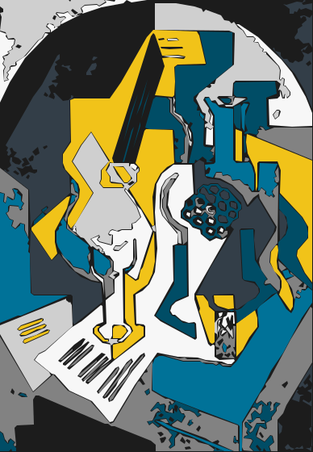

Organic · Colorset 1
Primordial Spiral Field
vectorize-hilma-chaos-organic-cs1
Biomorphic spirals and drifting marks reduced to broad editable color masses.
- Paths
- —
- Contours
- —
- Tile
- none
Editable paths · verified open sources
Four organic and Cubist-derived interpretations, each rendered from identical geometry in colorset1 and colorset2. No raster wrappers, generic shape kits, or hidden external assets.
One trace, two voices
Colorset 2 uses expressive multi-hue roles while retaining the same paths as colorset 1.
Published pattern set
Showing 4 colorset2 variants

Organic · Colorset 1
vectorize-hilma-chaos-organic-cs1
Biomorphic spirals and drifting marks reduced to broad editable color masses.

Organic · Colorset 2
vectorize-hilma-chaos-organic-cs2
Biomorphic spirals and drifting marks reduced to broad editable color masses.

Stain mirror · Colorset 1
vectorize-hilma-chaos-stain-mirror-cs1
Soft color regions mirrored into a continuous four-way abstract field.

Stain mirror · Colorset 2
vectorize-hilma-chaos-stain-mirror-cs2
Soft color regions mirrored into a continuous four-way abstract field.

Ink mirror · Colorset 1
vectorize-hilma-pleiade-ink-mirror-cs1
Hand-drawn loops simplified to one compound ink path and mirrored without raster content.

Ink mirror · Colorset 2
vectorize-hilma-pleiade-ink-mirror-cs2
Hand-drawn loops simplified to one compound ink path and mirrored without raster content.

Collage · Colorset 1
vectorize-juan-gris-collage-cs1
Overlapping still-life fragments retained as irregular cut-paper silhouettes rather than generic facets.

Collage · Colorset 2
vectorize-juan-gris-collage-cs2
Overlapping still-life fragments retained as irregular cut-paper silhouettes rather than generic facets.
{kind=link}
{kind=link}
{kind=link}
{kind=link}
{kind=link}
{kind=link}
{kind=link}
{kind=link}
{kind=link}
{kind=link}
{kind=link}